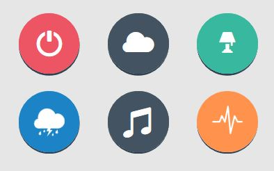
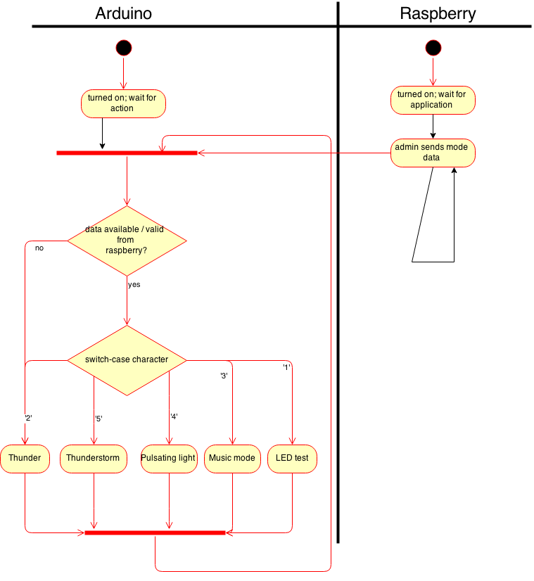

1. Use Case Name
Communication
1.1 Brief Description
The admin can select different modes for the CLOUD. The following 5 different modes exist:
- Pulsating Light,
- Thunder (with motion detection),
- Thunderstorm,
- Music Mode (sound reactive)
- LED Test and
- Turn off.
Therefore, the Raspberry Pi has to communicate with the Arduino and tell which mode shall be activated. This use case covers the whole functionality from the user interface, where the admin can select the mode, to the communication between Arduino and Raspberry Pi.
2. Flow of Events
2.1 Basic Flow

The admin selects one of the 5 modes for CLOUD by pressing the corresponding button. After waiting a few seconds, the server (Raspberry Pi) sends the corresponding information to the Arduino. The Arduino selects depending of the received information which routine shall be executed.
Explanation of different modes:
- Pulsating Light: The Arduino slowly dims it's LEDs creating relaxed mood.
- Thunder: In the thunder mode, the Arduino starts with one big thunder and then waits for a motion detection. The motion detection will be realised using a ultrasonic sensor attached to the Raspberry Pi. Every time when an object nearer then 20 cm is recognised, the Raspberry Pi will send the Arduino a signal telling him to light up. Meanwhile, the Raspberry Pi will play a single thunder sound.
- Thunderstorm: In this mode the Raspberry Pi plays a complete thunderstorm of about 3-5 minutes and the Arduino will light up it's LEDs accordingly.
- Music Mode: The music mode is sound reactive. The Arduino reacts to the volume/frequency of sounds using it's microphone. The sound level must be dynamically ajusted in order to make the LEDs light up when the music is very loud as well as when the music is very silent.
- LED Test: The LED Test causes the Arduino to test each of it's LEDs for a few seconds.
- Turn off: This mode tells the Raspberry Pi and the Arduino to shut down their system.

2.2 Alternative Flows
2.2.1 Fist Alternative Flow - The light mode doesn't change
As long as the light mode isn't changed by the admin, the Arduino will remain in it's current mode.
3. Special Requirements
Arduino and Raspberry Pi need to be turned on.
4. Preconditions
4.1 Precondition One
You need to be logged in as admin in order to change the mode of CLOUD and you need to be on the page 'Dashboard'.
5. Postconditions
5.1 Postcondition One
The user can see after a few seconds that the mode of CLOUD has changed.
6. Extension Points
Hereby, the following rules for the communication between both devices are defined:
- 0 -> Turn off
- 1 -> LED Test
- 2 -> Thunder (motion detection)
- 3 -> Music Mode (sound reactive)
- 4 -> Pulsating Light
- 5 -> Thunderstorm